PULSE is the AI-powered command centre for Microsoft Solution Engineers. It turns your real MSX pipeline, meetings, and email into a weekly milestone report, an 8-motion execution scorecard, CAF nominations, and an FY Connect — all from a Teams agent and a web dashboard. Nothing to install.
Sign in with your Microsoft account. First time? Get your link code →
Less time reporting your work. More time doing it.
PULSE reads the systems you already work in — MSX (Dataverse), your Microsoft 365 signals, and the Fabric CAF data — and turns them into the four things SEs actually get measured on: weekly progress, motion coverage, Factory nominations, and your FY Connect. You review and approve; PULSE does the assembling.
Your week, already written — with CRM push and Direct / Partner / Internal evidence.
Learn more →Eight SE motions scored for coverage % and gap ACR, scoped to your discipline.
Learn more →Stalled, declined and eligible-but-not-nominated opportunities, ready to submit.
Learn more →PULSE pulls your live MSX milestones and the week's real activity — meetings, emails, follow-ups — and drafts the weekly progress narrative for each one. You review, tweak, and save. It files everything by fiscal week automatically, with a roll-up of territory value, ACR, HoK and blockers across every deal.
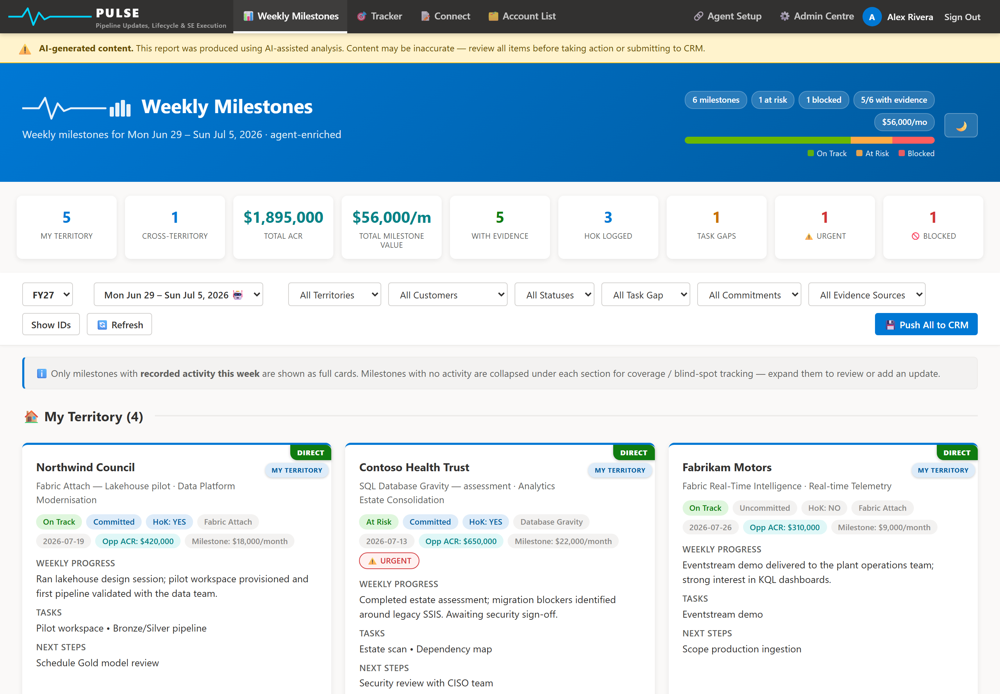
Every card opens into a full editor. Refine the weekly progress, set the status, capture next steps and add tasks — then watch the CRM comment build live in the preview. One click writes the forecast comment back to MSX and logs your tasks as MSX activities. The generated text is a starting point; the final word is always yours.
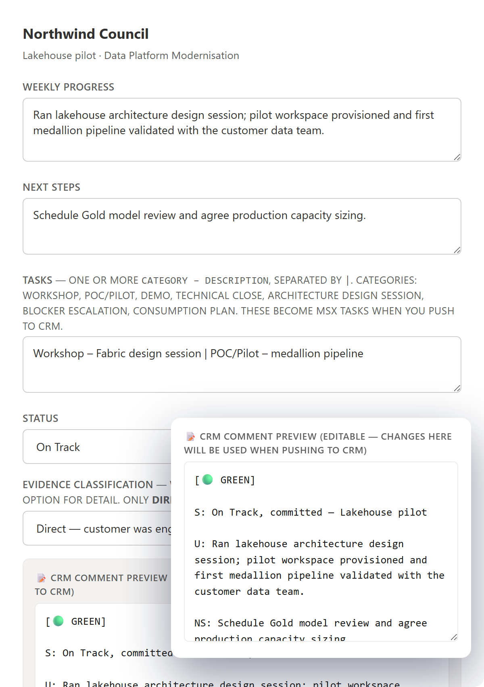
PULSE reads your deal-team assignments straight from Dataverse and lays out your full book of business — parent accounts, their child organisations, and the territory each rolls up to. Duplicate records are de-duplicated, and each account is tagged with the SE motions in play so you always know your patch.
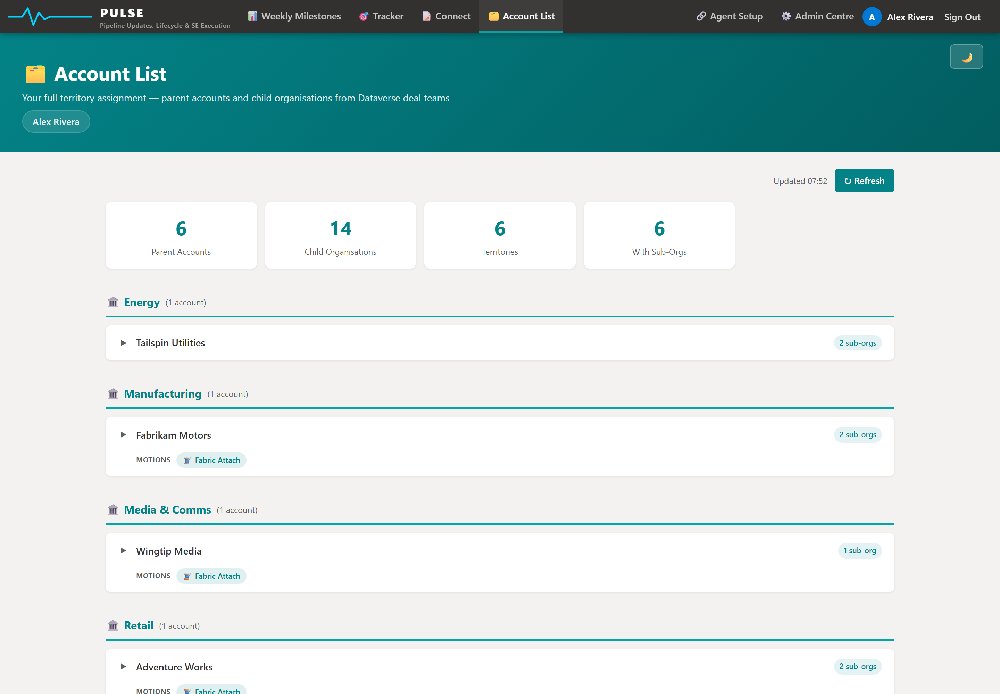
A live command centre for your patch. The Tracker opens on an execution posture strip — deals with evidence, at-risk, committed, HoK, deduped ACR — then hands you a prioritised "this week" action list, an outcome scorecard, and a per-motion breakdown, all scoped to your discipline via RAIN Qualifier 2.
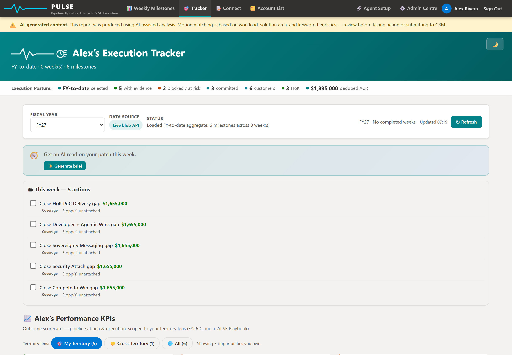
PULSE scores your whole book against the eight SE motions that matter — SQL / Database Gravity, Fabric Attach, Compete-to-Win, Developer + Agentic, Sovereignty, Security Attach, HoK PoC and CAF. Each card shows coverage, how many opportunities have the motion attached versus in gap, and the ACR sitting in that gap — your discipline's motions starred, adjacent ones flagged.
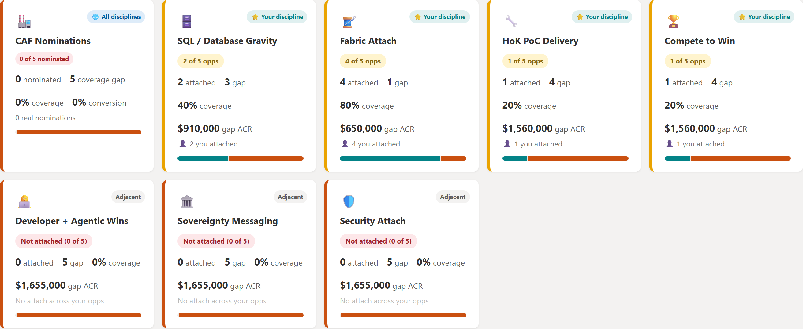
Click any motion and PULSE opens the deals behind the score — exactly which opportunities have it attached and which don't, each named with its ACR and the gap ACR still on the table. It's the difference between "we should attach more" and a named list of deals to act on this week.
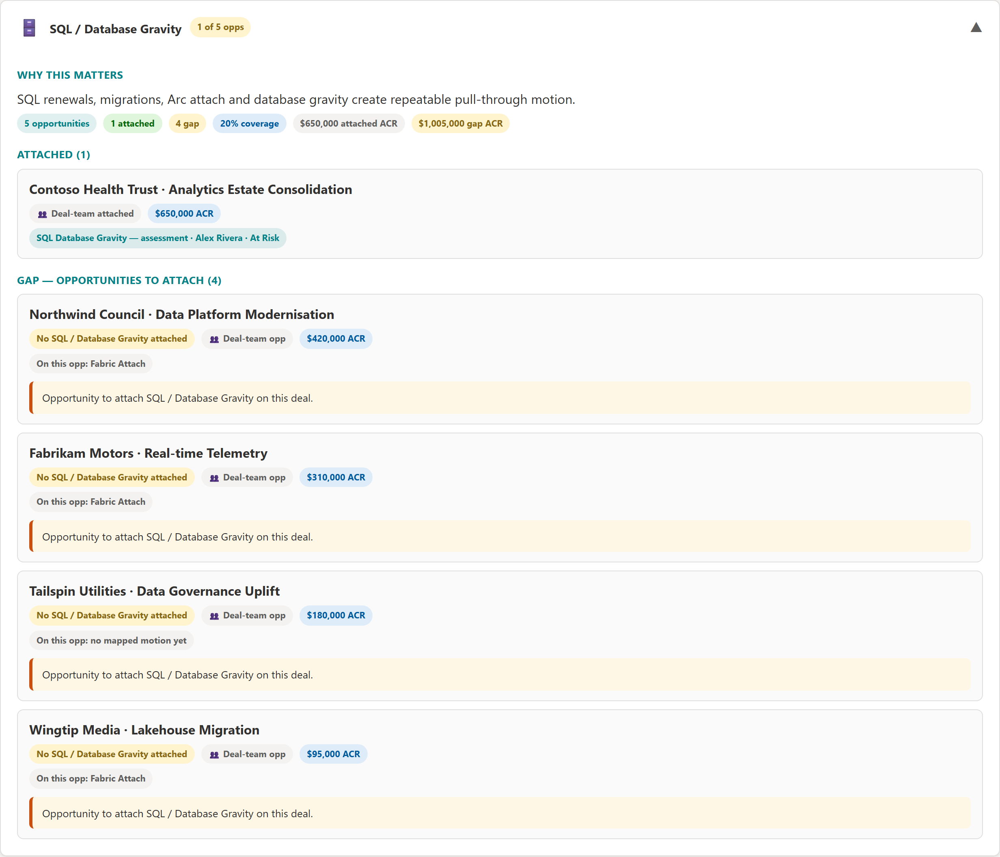
Whitespace turns your territory into an action queue. PULSE finds accounts with an active opportunity but no matching motion (Attach Gaps) and accounts with no active opportunity at all (Greenfield), then ranks them by uncovered pipeline and how soon the anchor deal closes — and offers an AI-suggested attach play for each.
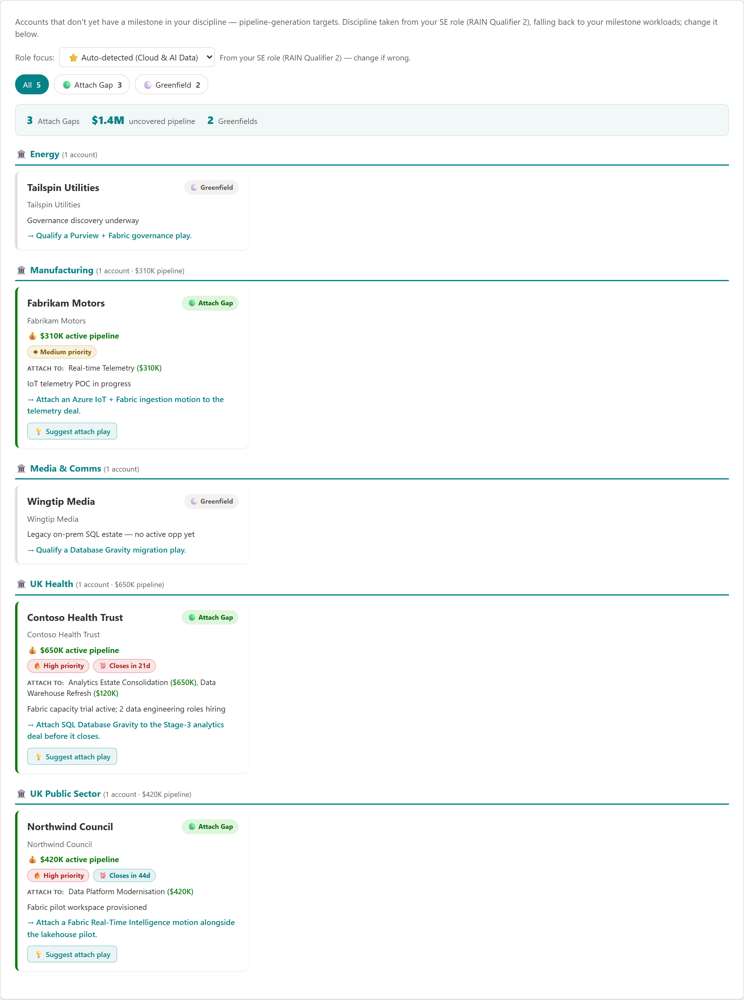
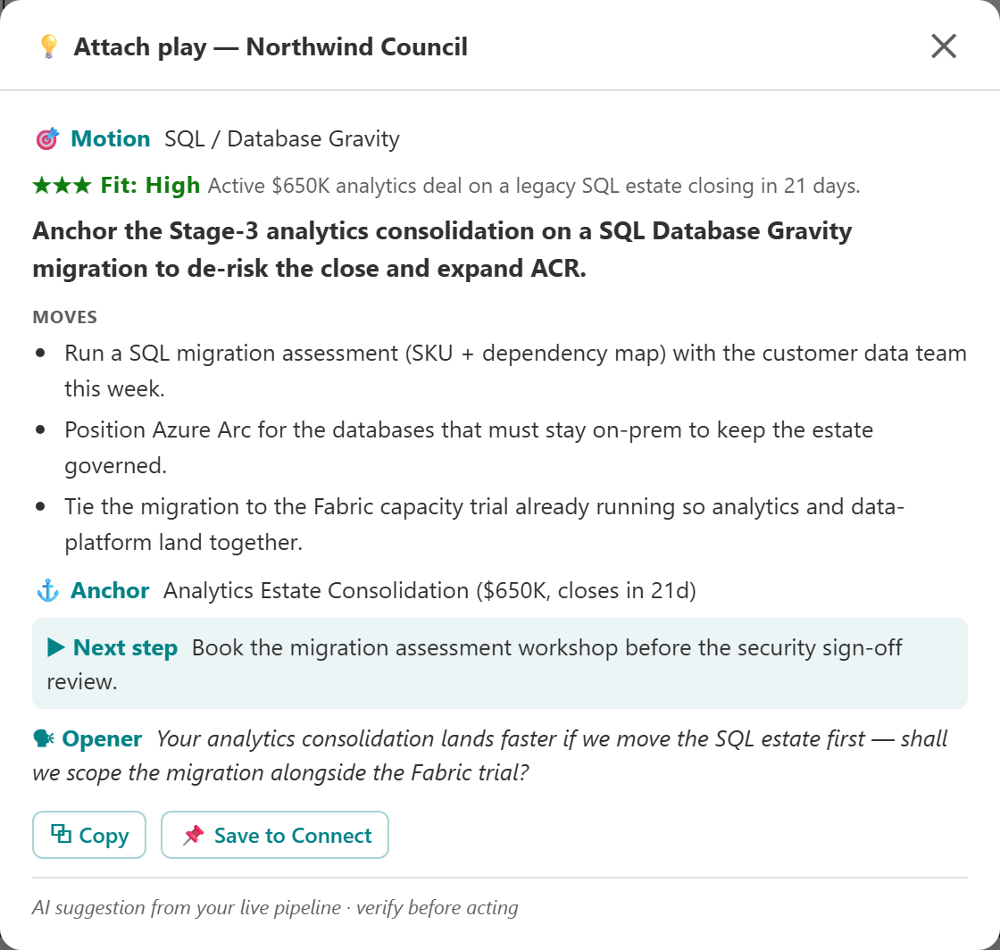
PULSE watches the Cloud Accelerate Factory data and surfaces the opportunities that are eligible but not nominated, stalled, or declined. When one qualifies, it assembles the full nomination packet — mapped to the Azure Offer Navigator form — for you to review and submit.
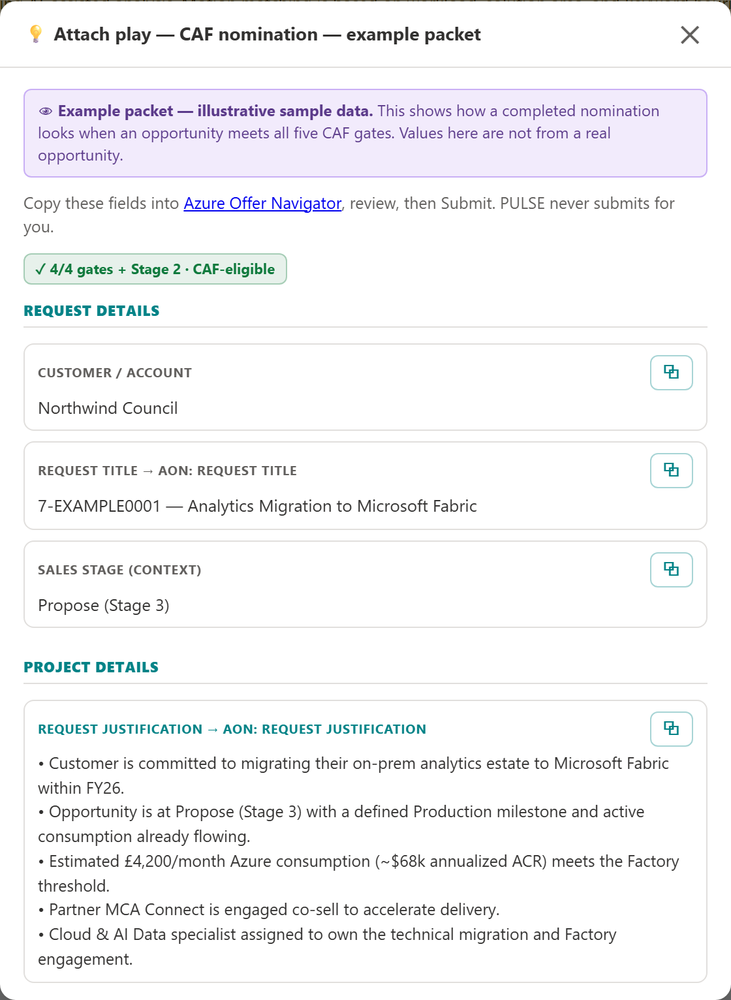
Add evidence whenever it happens — a win, a workshop, a piece of feedback. PULSE keeps it in a per-user store and surfaces a financial summary, ACR by customer, and an evidence timeline mapped to the goal framework — so your impact is building all year, not the night before review.
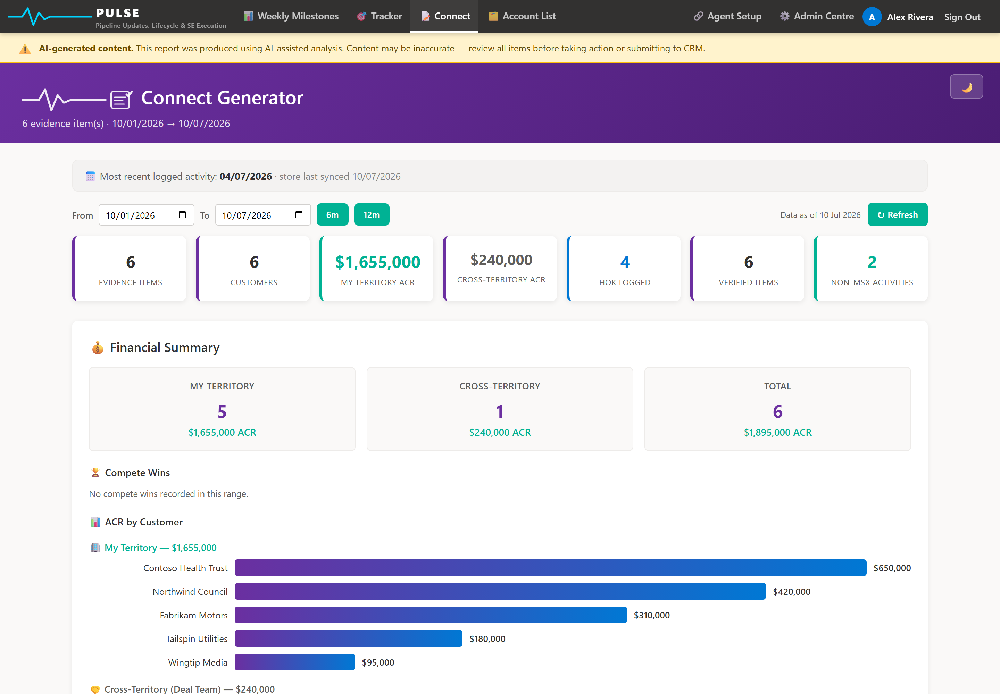
Press generate and PULSE writes your Connect from your evidence — results you delivered and how, setbacks and what you learned, goals for the period ahead, and the behaviours that will get you there. Every claim is grounded in a real logged activity, with character counts and copy buttons ready for the review form.
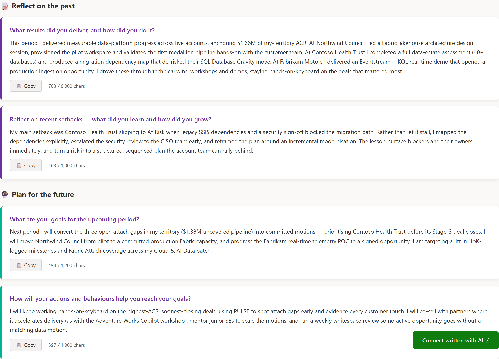
Under the prose, every piece of evidence is classified to a Connect goal and laid out as a "What / How" summary plus a full evidence table — customer, activity, type, date, source, HoK and ACR. It's the receipts behind the narrative, so a manager can see the impact at a glance and you can defend every line.
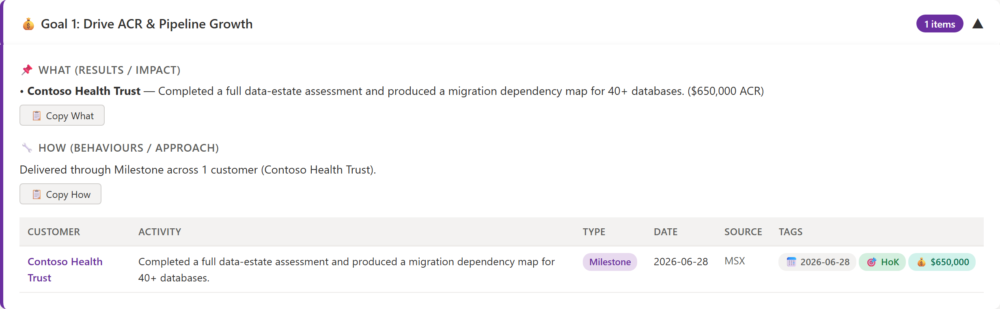
No desktop app. PULSE is a Microsoft 365 agent in Copilot plus a secure web dashboard, backed by your own MSX data. Here's the path a request takes:
Ask PULSE to “generate my report” inside Microsoft 365 Copilot. It gathers your week and drafts it.
Review, edit and save. Milestones, Tracker, CAF and Connect all light up with your own data.
Per-user and keyed to your account — you sign in with your Microsoft account and PULSE only ever sees your territory.
PULSE isn't in the company app store yet, so there's a quick one-time setup (~5 min) to add the agent. The user guide has the full walkthrough.
First, a quick eligibility check: PULSE reads your own MSX (Dataverse) data, so you need an active MSX seat — a licensed MSX user. If you use MSX today, you're all set.
You're already added as a collaborator, so open dev.teams.microsoft.com → Apps → PULSE → Preview in Teams. No file needed. One time only.
In Copilot, say “generate my report.” The agent walks you through linking and asks for your one-time code.
Open the dashboard's Link page, sign in, copy your code (looks like ABCD-EFGH), and paste it back. You link once.
Say “save to dashboard.” Milestones, Tracker, CAF and Connect now populate automatically.
PULSE is built and run by one SE in UK&I. Feedback and collaboration very welcome.
✉️ dboateng@microsoft.com